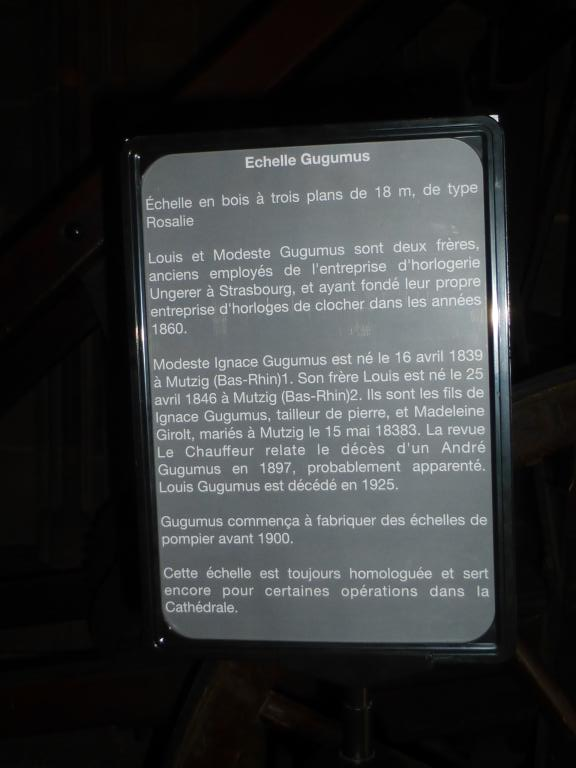
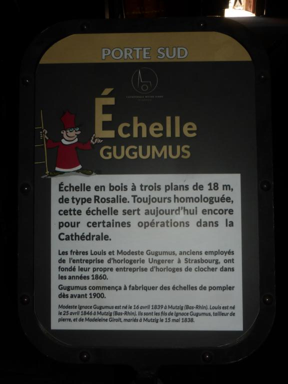

L'horloge appartient à l'État, ce que reconnaît d'ailleurs la fabrique de la cathédrale de Strasbourg.
Certains habitués et passionnés de l'horloge astronomique viennent à la première heure le 1er janvier pour voir si l'horloge astronomique a bien fonctionné, calculé la nouvelle année, les fêtes mobiles et surtout la date de Pâques. Ce qu'ils ne savent pas, c'est que très souvent cela se passe mal, la date de Pâques n'est pas à la bonne place, etc. Le premier à venir à l'horloge, avant l'ouverture aux touristes, c'est celui qui entretient l'horloge et il veille le 1er janvier à corriger toutes les indications erronées du calendrier. Voilà la vérité sur le changement d'année !
En raison de l'absence de véritable supervision scientifique de l'horloge, tant au niveau de l'entretien ordinaire que de la conservation, certains éléments de l'horloge ainsi que des informations ont irrémédiablement disparu. (détails à venir)
Plusieurs légendes alimentent l'horloge astronomique, comme celle où l'on aurait crevé les yeux du constructeur pour l'empêcher de construire une horloge similaire ailleurs. Celui-ci aurait alors cassé un mécanisme qui permettait aux lions de rugir. Mais ce ne sont que des légendes.
Par contre, il y a eu de vrais cas de sabotages récents sur l'horloge. (Détails à venir)
En 2001-2003, j'ai réalisé quelques modélisations 3D partielles de l'horloge astronomique, par exemple du planétaire, des rouages de la précession et du comput. Ces modélisations n'ont pas été rendues publiques, car inachevées. Pour une modélisation plus récente, voir celle que j'ai faite pour Notre-Dame de Paris.
Jusqu'au milieu des années 1980, la supervision de l'horloge astronomique était uniquement assurée par l'entreprise Ungerer et notamment par son ingénieur Henri Bach (1909-1991). Ensuite, jusqu'en 2006, il n'y a eu aucune véritable supervision scientifique, seul le remontage et un entretien minimal étaient assurés.
L'actuel comité a été créé en 2006 en conséquence de mes contacts au début des années 2000 avec la paroisse de la cathédrale. Les premiers membres de ce comité ont été Jean-Pierre Rieb, moi-même et plusieurs membres de la fabrique. Peu après, le comité a été rejoint par Alfred Faullimmel, qui assurait l'entretien de l'horloge jusqu'en 2001. En 2012, j'ai démissionné de ce comité, parce que j'estimais que la fabrique ne soutenait pas suffisamment la recherche scientifique, et même la bloquait. Il n'était plus possible d'exercer une supervision scientifique digne de ce nom. Après 2012, d'autres membres ont rejoint le comité, mais la recherche y est quasiment inexistante et ne semble pas se faire de manière très scientifique. Le comité n'a d'ailleurs pas de direction scientifique.
Divers travaux ont eu lieu au cours de la période 2013-2019, notamment au niveau de la façade extérieure du transept sud. Les cadrans solaires de Dasypodius ainsi que le cadran extérieur de l'horloge astronomique ont été restaurés. En 2018, le buffet de l'horloge astronomique a été restauré.
Ces travaux ont été réalisés sans collaboration étroite avec les chercheurs, pas même avec le comité scientifique de l'horloge astronomique. Les besoins des chercheurs n'ont jamais été pris en compte et on n'a pas profité de l'échafaudage pour documenter par exemple le coq automate. On pourra évidemment le faire dans 50 ans... Il y a apparemment eu une réunion « scientifique », mais qui a réuni plusieurs personnes pas du tout expertes dans l'étude et la documentation des horloges astronomiques et mécanismes complexes.
À ce jour, malgré de nombreuses demandes, la DRAC a refusé de communiquer les rapports de restauration de ces différentes interventions, alors que les chercheurs, et même le public en général, ont le droit d'avoir un accès complet à ces données, rapports, photographies, etc., qui ne doivent pas simplement être réservés à des conservateurs.
Il y a eu trois films réalisés en collaboration avec la fabrique de la cathédrale de Strasbourg :
- Un premier film a été réalisé par la société La Goélette vers 1990, et c'est la même qui édite l'une des brochures en vente à la cathédrale. Ce film était jadis en vente à la cathédrale.
- Un second film a été réalisé par l'archiprêtre Bernard Eckert et a été projeté à côté de l'horloge astronomique entre 2007 et 2017. Ce film n'a jamais été en vente. Il serait souhaitable que ce film soit récupéré et rendu librement accessible dans des archives, voire sur youtube. Il est certainement en possession de la fabrique, et évidemment de M. Eckert.
- Le film actuel a été réalisé par l'entreprise InventiveStudio en 2016-2017 et projeté à partir de 2017. Il est aussi en vente dans le magasin de la cathédrale. Ce film s'appuie sur une modélisation 3D partielle de l'horloge. Néanmoins, cette modélisation est incomplète et souvent approximative, même s'il est difficile de le voir sur le film. Cette modélisation a été réalisée en six mois et s'appuie probablement sur un scan 3D. Le modèle 3D surfacique n'est pas accessible et la fabrique de la cathédrale qui a commandé le film (40000 euros) ne le possède pas.
Une échelle Gugumus se trouve à l'intérieur de la cathédrale. Les Gugumus étaient d'anciens employés de l'entreprise Schwilgué-Ungerer. En mai 2018 ou peu avant, la fabrique de la cathédrale a placé devant cette échelle un petit panneau, qui donne quelques éléments biographiques sur les frères Gugumus, en faisant croire que ces informations proviennent de la fabrique. En réalité, ce sont des informations que la fabrique a récupérées de Wikipédia, où je les avais mises, suite à mes recherches sur les Gugumus. Ce panneau a été modifié suite à mes réclamations, la fabrique ayant voulu cacher son « copier-coller » maladroit (la version initiale copiait les appels de note, sans mettre les notes...). Voici les trois principales versions de ce panneau : à gauche, la version initiale où les appels de note sont encore présents (ce qui donne par exemple la date ridicule du 15 mai 18383 !), au milieu la version corrigée après que j'ai signalé le plagiat au chancelier de l'archevêché (Bernard Xibaut), et à droite la version actuelle. La version du milieu laisse encore croire que les informations viennent de la fabrique, alors que la personne chargée des relations publiques a simplement copié Wikipédia sans le dire, et comme si elle n'avait de comptes à rendre à personne.
|  |  |
 |
{kind=link}
{kind=link}
Voici pour mémoire à quoi ressemblait la page Wikipedia pour Gugumus en mai 2018, ce que chacun peut d'ailleurs vérifier :

Autre bêtise de la personne qui a fait la première version du panneau, la date de décès de Louis Gugumus qui était indiquée en 1902, avec un appel de note 5, est devenue 19025 et visiblement cette personne n'a rien trouvé de mieux à faire que de remplacer 19025 par 1925 ! Étonnant, non ?
Par ailleurs, il n'est pas très difficile de trouver quand ces données ont été mises pour la première fois en ligne et par qui.
En d'autres termes, la personne qui a préparé le panneau a fait un copier-coller, sans même lire et comprendre le texte et sans chercher à attribuer correctement les sources. C'est quand même intelligent, non ? Encore aujourd'hui (2022), la fabrique refuse de reconnaître son erreur et l'origine des informations.
La fabrique ne respecte donc pas vraiment les sources, et le fait que l'État Civil du 19e siècle est accessible à tous ne signifie pas pour autant que l'on ne doive pas dire d'où viennent les informations. Il y a une différence entre une information que la fabrique aurait obtenue par elle-même, et une information qui résulte du travail de quelqu'un. En l'occurrence, c'est moi qui ai fait les recherches dans l'État-Civil en 2013, pas la fabrique. Au minimum, la fabrique aurait dû citer Wikipédia.
En 2019, les membres du comité scientifique de l'horloge astronomique ont rassemblé des informations sur l'horloge, guidés par l'archiprêtre (M. Wackenheim) et le chancelier de l'archevêché (B. Xibaut), et ces informations ont été rédigées en langue vulgaire par Sylvie de Mathuisieulx, un auteur jeunesse.
On remarquera que ce guide évite soigneusement de donner les origines exactes du comité (je ne suis même pas mentionné), mais il se méprend aussi sur les objectifs qui étaient ceux du comité. Il ne s'agissait pas simplement de superviser l'entretien, les réparations et le réglage, mais de créer une dynamique scientifique autour de l'horloge, et notamment de développer la recherche. C'est la recherche scientifique qui a mené à la création du comité, et le comité devait servir à faire avancer la connaissance sur l'horloge. Cela ne semble plus être compris...
L'exposition « Time is Tomi » a eu lieu à Besançon en 2020 et était consacrée aux liens entre l'artiste Tomi Ungerer et l'horlogerie. À cette occasion, le Musée du temps de Besançon a été en contact avec plusieurs personnes à Strasbourg, dans les musées et ailleurs, mais avec seulement deux personnes directement associées à l'horloge astronomique : l'intendant Gérald Valette et Alfred Faullimmel, chargé de l'entretien de l'horloge jusqu'en 2001. Aussi étonnant que cela puisse paraître, le Musée du temps n'a apparemment pas été en contact avec le restant du comité. Je n'ai pas non plus été contacté, bien que je sois cité dans le catalogue pour plusieurs travaux de recherche non publiés (et donc non citables sans autorisation). C'est assez curieux et pas très professionnel.
Le musée des arts décoratifs de la ville de Strasbourg et le musée de l'Œuvre Notre-Dame ont engagé en 2021 un marché de restauration de statuettes de la seconde horloge astronomique, ainsi que de grisailles de Stimmer. On peut obtenir des musées de Strasbourg le DCE, le CCTP et peut-être d'autres informations. Ce marché fait suite à des marchés antérieurs contractés avec les restaurateurs François et Francine Péquignot. Les musées de Strasbourg bloquent actuellement l'accès des chercheurs (au moins moi) aux statuettes, sous prétexte justement qu'elles vont être restaurées.
Ce modèle est depuis novembre 2021 en possession de la fabrique de la cathédrale de Strasbourg. Il n'est pas exposé.
Pour annoncer cette redécouverte la fabrique attend peut-être
- qu'une documentation soit rédigée sur ce mécanisme ?
- qu'il soit restauré ?
- qu'il soit exposé (au Musée des arts décoratifs ?) ?
- que le reportage de Stéphane Bern soit diffusé ?
- autre chose?
En tous cas, le meilleur endroit pour son exposition est le musée des arts décoratifs et ce mécanisme doit être accessible aux chercheurs (pas simplement sous vitrine).
L'équipe de Stéphane Bern prépare actuellement (avril 2022) un reportage sur l'horloge astronomique de la cathédrale de Strasbourg, et notamment sur son comput.
La Fondation de l'Œuvre Notre-Dame prévoit de remettre en fonction l'horloge Schwilgué-Ungerer de la plate-forme de la cathédrale, remontant en grande partie aux années 1840 (en dépit de la plaque quelque peu trompeuse qui date l'horloge de 1921). Il est à souhaiter que les préconisations que j'avais énoncées dans l'article du Bulletin de la cathédrale de Strasbourg de 2016 seront prises en compte. Elles n'avaient pas été prises en compte lors du réaménagement de la plate-forme en 2019 et la Fondation (et ville de Strasbourg) bloque mon accès à l'horloge de la plate-forme depuis 2013.